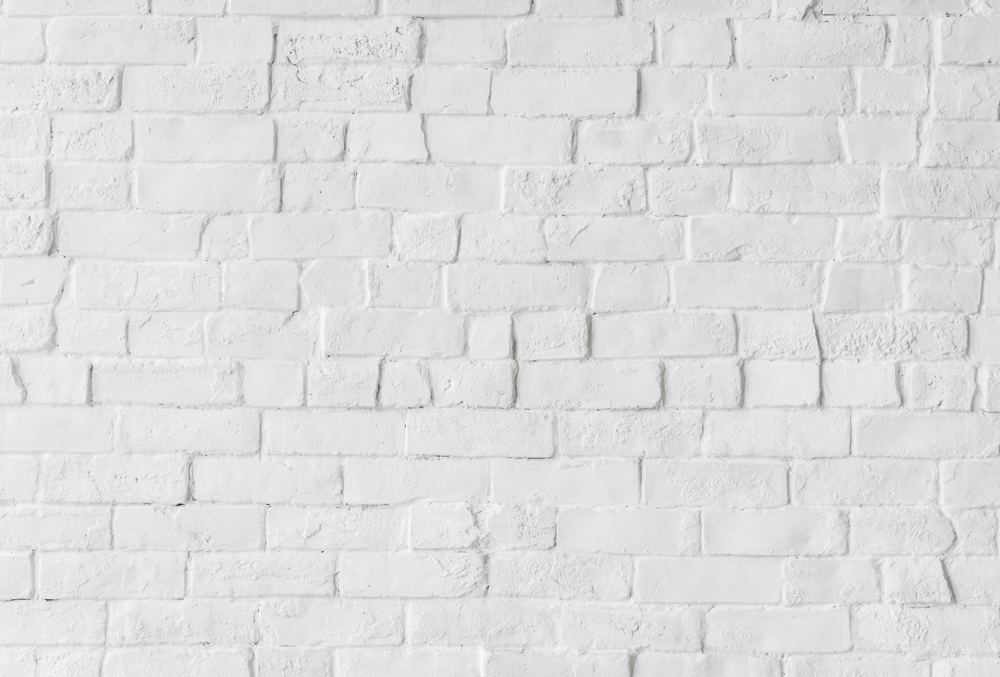
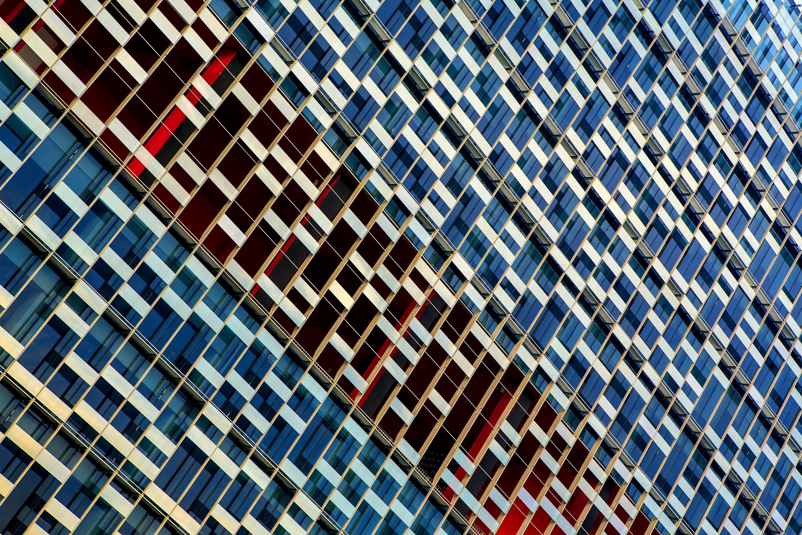
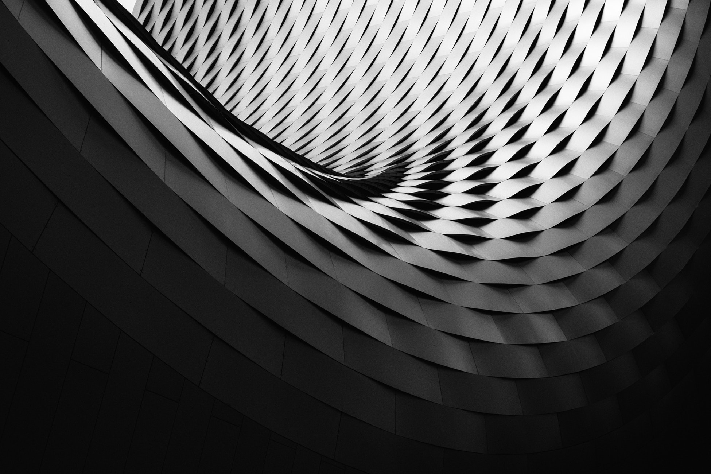
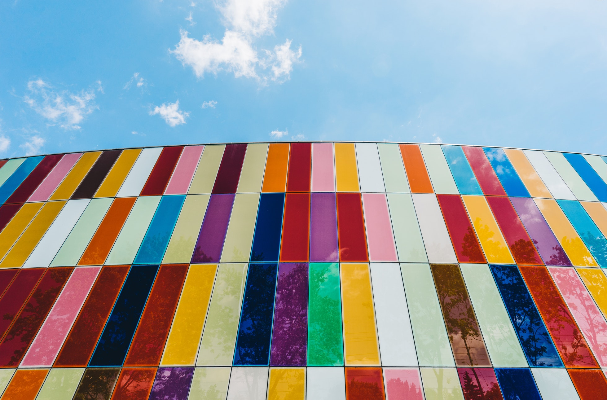

Explore Creative Patterns

This geometric pattern showcases a modern blend of colors and symmetry. Its unique design creates a visually appealing texture that is perfect for contemporary architecture and creative projects.

Inspired by futuristic architecture, this pattern highlights depth, movement, and precision. The flowing structure creates a dynamic visual effect that captures attention instantly.

A vibrant collection of colors arranged in a striking pattern that reflects creativity and innovation. This design brings energy and personality to any modern space.